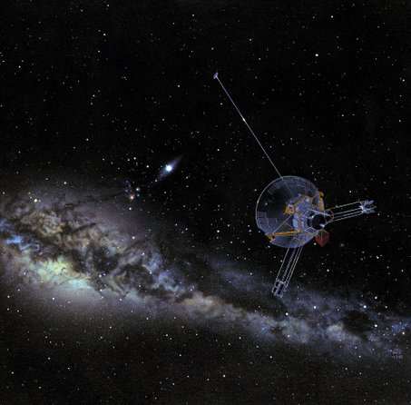

TOP 10 MISSIONS OF NASA
-
THE EXPLORATON OF SPACE

NASA has a long legacy of space exploration. In the decades since its founding, the space agency has landed rovers on Mars, sampled the atmosphere of Jupiter, explored Saturn and Mercury - and even landed humans on the moon - to name a few. Some missions, like the Kepler planet-hunting observatory, are relatively new, and only time will tell if they join the ranks of NASA's finest flights. Here's our subjective list of 10 NASA missions that have already earned their spot in the space mission hall of fame.
-
PIONEER 
-
VOYAGER

-
WMAP
Pioneer 10 and Pioneer 11, launched in 1972 and 1973, respectively, were the first spacecraft to visit the solar system's most photogenic gas giants, Jupiter and Saturn. Pioneer 10 was the first probe to travel through the solar system's asteroid belt, a field of orbiting rocks between Mars and Jupiter. Then about a year-and-a-half after its launch, the spacecraft made the first fly by of the planet Jupiter. It took stunning up-close photos of the Great Red Spot and the wide swaths of red that band the planet. About a year later, Pioneer 11 flew by Jupiter, and then moved on to Saturn, where it discovered a couple of previously unknown small moons around the planet, and a new ring. Both probes have stopped sending data, and are continuing out on their one-way voyages beyond the solar system.
Shortly after the Pioneers made their flybys, the Voyager 1 and Voyager 2 probes followed. They made many important discoveries about Jupiter and Saturn, including rings around Jupiter and the presence of volcanism on Jupiter's moon, Io. Voyager went on to make the first flybys of Uranus, where it discovered 10 new moons, and Neptune, where it found that Neptune actually weighs less than astronomers thought. Both Voyager crafts have enough power to keep transmitting radio signals until at least 2025, and are now exploring the very edge of the solar system and beginning of interstellar space. Voyager 2 is currently the farthest man-made object from Earth, at more than a hundred times the distance from the Earth to the sun, and more than twice as far as Pluto.
-
SPITZER
The Wilkinson Microwave Anisotropy Probe (WMAP), launched in 2001, may not be as well-known, but it measures with unprecedented accuracy the temperature of the radiation left over from the Big Bang. By mapping out the fluctuations in the so-called cosmic microwave background radiation, the spacecraft has heralded a leap forward in cosmological theories about the nature and origin of the universe. Among other revelations, the data from WMAP revealed a much more precise estimate for the age of the universe ? 13.7 billion years ? and confirmed that about 95 percent of it is composed of poorly understood things called dark matter and dark energy.
-
SPIRIT AND OPPORTUNITY
Another spacecraft with a profound effect on cosmology and astrophysics is the Spitzer Space Telescope, which observed the heavens through infrared light. This light, which has a longer wavelength than visual light, is mostly blocked by Earth's atmosphere. In addition to taking gorgeous photos of galaxies, nebulae and stars, the telescope has made numerous groundbreaking scientific discoveries. In 2005 Spitzer became the first telescope to detect light from extrasolar planets (most of these distant worlds are detected only through secondary, gravitational effects on their suns). In another observation, astronomers think the telescope may have even captured light from some of the first stars born in the universe.
-
CASSINI-HUYGENS
Intended for just a 90-day mission, these workhorse Mars rovers have far outdone themselves, and are still chugging away on the red planet more than five years after landing. Spirit and Opportunity, the twin Mars Exploration Rovers, landed on opposite sides of the planet in January 2004. Since then, they have been traveling all over the surface, poking into craters and roving over unexplored hills. Among their major finds is evidence that the surface of Mars once had liquid water. (A tip of the hat to Sojourner rover, which brought full-color close-ups of Mars in 1997, just as the Internet was becoming wildly popular, thereby earning a special place in the hearts of millions who enjoyed unprecedented access to NASA mission photos.)
-
CHANDRA
This joint NASA/ESA spacecraft, launched in 1997, reached its destination, Saturn, in 2004. Since then it has been in orbit around the ringed world, taking one stunning snapshot after another of the planets rings, moons and weather. The Hugyens probe separated from Cassini and made a special trip to the moon Titan, where it descended through the atmosphere and landed on solid ground in 2005. Though previous spacecraft have visited Saturn, Cassini is the first to orbit it and study the system in detail.
-
VIKING
Since 1999, the Chandra X-ray Observatory has been scanning the skies in X-ray light, looking at some of the most distant and bizarre astronomical events. Because Earth's pesky atmosphere blocks out most X-rays, astronomers couldn't view the universe in this high-energy, short-wavelength light until they sent Chandra up to space. The observatory has such high-resolution mirrors, it can see X-ray sources 100 times fainter than any previous X-ray telescope. Among other firsts, Chandra showed scientists the first glimpse of the crushed star left over after a supernova when it observed the remnant Cassiopeia A.
-
HUBBLE
When NASA's Viking 1 probe touched-down on Mars in July 1976, it was the first time a man-made object had soft-landed on the red planet. (Though the Soviet Mars 2 and 3 probes did land on the surface, they failed upon landing). The Viking 1 lander also holds the title of longest-running Mars surface mission, with a total duration of 6 years and 116 days. The spacecraft also sent the first color pictures back from the Martian surface, showing us what that mysterious red dot looks like from the ground for the first time.
The most-loved of all NASA spacecraft, the Hubble Space Telescope has name recognition around the world. Its photos have changed the way everyday people figure themselves into the cosmos. The observatory has also radically changed science, making breakthroughs on astronomical issues too numerous to count. By finally sending up an optical telescope to peer at the sky from beyond Earth's turbulent atmosphere, NASA developed a tool that could reveal stars, planets, nebulae and galaxies in all their fully-detailed glory.